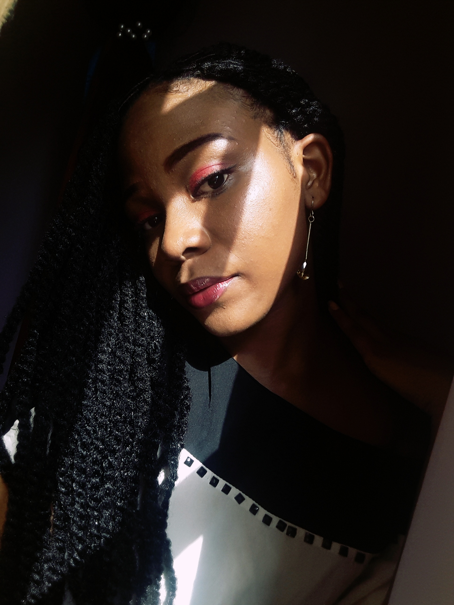

CURRICULUM VITAE

Etat Civil
- AGASSOUNON Chrislaine Précieuse Yana
- Née le 02 juin 2004 à Cotonou
- Sexe: Féminin
- Nationalité: Béninoise
- Célibataire
- 67552335
- agassounonchrislaine780@gmail.com
Formation académique
- Juin 2021: Baccalauréat série D, CCSJB
- Juillet 2018: Brevet, moderne court,CSNDA
- Juin 2014: CEP,
Activités Paraprofessionnelles
- Décembre 2019: Ambassadrice de l'art oratoire RFI
Capacités linguistiques
- Maîtrise courante du français
- Maîtrise courante de l'anglais à l'écrit
- Passionnée de lecture, d'afro love et d'art culinaire
Je certifie sur l'honneur la sincérité et l'exactitude des renseignements ci-dessus.
Revenir en Arrière